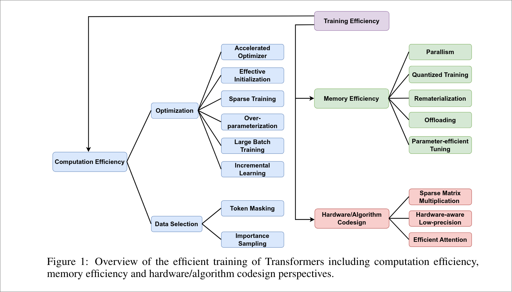
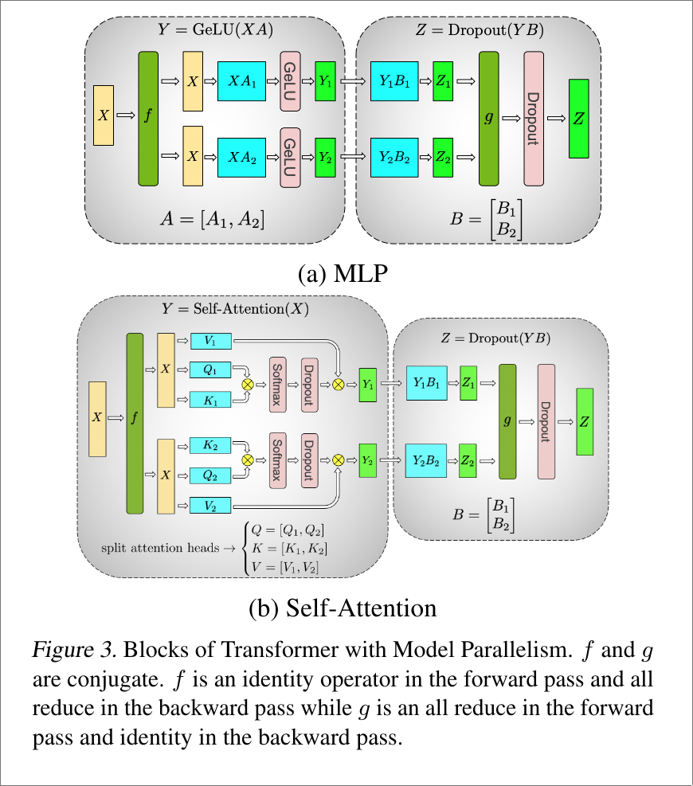
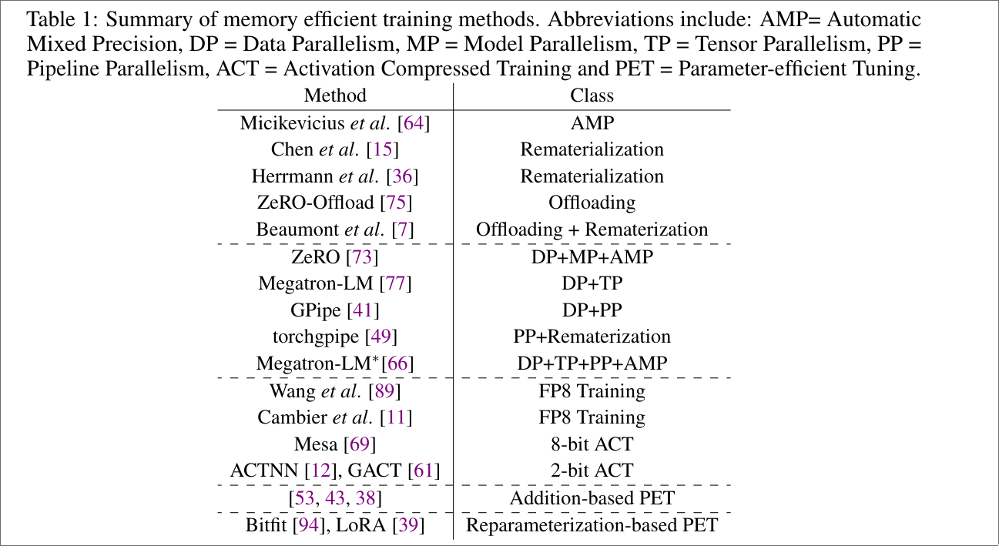

Overview of LLM Training
Main references:
A Survey on Efficient Training of Transformers IJCAI'23
Systems for Parallel and Distributed Large-Model Deep Learning Training
* Efficient Training of Large Language Models on Distributed Infrastructures: A Survey
( Latest )

Computation
Memory Efficiency
Analysis:
Low-Memory Neural Network Training: A Technical Report
Parallelism
PyTorch Distributed Overview — PyTorch Tutorials 2.4.0+cu121 documentation
PyTorch distributed system overview.
Efficient Training on Multiple GPUs
Huggingface's transformers multi-GPUs training guide.
Data Parallelism
Simplest Data Parallel
DataParallel — PyTorch master documentation
Parameter Sharing
ALBERT: A Lite BERT for Self-supervised Learning of Language Representations ICLR'20
Distributed Data Parallel
DistributedDataParallel — PyTorch master documentation
PyTorch Distributed: Experiences on Accelerating Data Parallel Training
Getting Started with Distributed Data Parallel — PyTorch Tutorials 2.4.0+cu121 documentation
Distributed Data Parallel — PyTorch 2.4 documentation
Fully Sharded Data Parallel
PyTorch FSDP: Experiences on Scaling Fully Sharded Data Parallel
ZeRO
ZeRO: Memory Optimizations Toward Training Trillion Parameter Models SC'20
ZeRO-1
ZeRO-2
ZeRO-3
Basic ZeRO.
Model Parallelism
Megatron-LM: Training Multi-Billion Parameter Language Models Using Model Parallelism
Two orthogonal main methods to boost model parallel: pipeline parallelism and tensor parallelism.
Analysis
Analysis of model parallelism for distributed neural networks
Pipeline Parallelism
* PipeDream: Fast and Efficient Pipeline Parallel DNN Training
PipeDream: generalized pipeline parallelism for DNN training SOSP'19
Pipelined Backpropagation at Scale: Training Large Models without Batches MLSys'21
PipeMare: Asynchronous Pipeline Parallel DNN Training
Memory-Efficient Pipeline-Parallel DNN Training ICML'21
torchgpipe: On-the-fly Pipeline Parallelism for Training Giant Models
Chimera: Efficiently Training Large-Scale Neural Networks with Bidirectional Pipelines SC'21
PipeMare: Asynchronous Pipeline Parallel DNN Training MLSys'21
Pipeline Scheduler
* GPipe: Efficient Training of Giant Neural Networks using Pipeline Parallelism NeurIPS'19
DAPPLE: A Pipelined Data Parallel Approach for Training Large Models SOSP'21
Tensor Parallelism
Math:
BLIS: A Framework for Rapidly Instantiating BLAS Functionality
Framework:
Mesh-TensorFlow: Deep Learning for Supercomputers NeurIPS'18
Megatron-LM: Training Multi-Billion Parameter Language Models Using Model Parallelism

Context Parallelism
Reducing Activation Recomputation in Large Transformer Models MLSys'23
Sequence Parallelism: Long Sequence Training from System Perspective
Hybrid parallel / 3D Parallel
Tuning Configuration
Brute-force Approach
Parallelization Layouts for Large-Scale Distributed Model Training
Theory Approach
* Beyond Data and Model Parallelism for Deep Neural Networks MLSys'19
Supporting Very Large Models using Automatic Dataflow Graph Partitioning EuroSys'19
* Alpa: Automating Inter- and Intra-Operator Parallelism for Distributed Deep Learning OSDI'22
Enabling Compute-Communication Overlap in Distributed Deep Learning Training Platforms ISCA'21
Quantized
Mixed Precision Training ICLR'18
Quantization
ZeroQuant: Efficient and Affordable Post-Training Quantization for Large-Scale Transformers NeurIPS'22
Shifted and Squeezed 8-bit Floating Point format for Low-Precision Training of Deep Neural Networks
Training Deep Neural Networks with 8-bit Floating Point Numbers NeurIPS'18
Activation Compressed Training
ActNN: Reducing Training Memory Footprint via 2-Bit Activation Compressed Training ICML'21
Mesa: A Memory-saving Training Framework for Transformers
GACT: Activation Compressed Training for Generic Network Architectures ICML'22
Checkpointing / Rematerialization
Originally purposed:
Training Deep Nets with Sublinear Memory Cost
Dynamic Tensor Rematerialization
Use in
Compute-Memory Balanced Checkpointing
Offloading
Swapping Problem
* SwapAdvisor: Pushing Deep Learning Beyond the GPU Memory Limit via Smart Swapping ASPLOS'20
Efficient Combination of Rematerialization and Offloading for Training DNNs NeurIPS'21
ZeRO-Offload: Democratizing Billion-Scale Model Training ATC'21
To Disk
ZeRO-Infinity: Breaking the GPU Memory Wall for Extreme Scale Deep Learning SC'21
Spilling
Training Large Neural Networks with Constant Memory using a New Execution Algorithm
Hydra: A System for Large Multi-Model Deep Learning
Pipeline-Parallel-Aware Offloading
Real World Training Framework

Colossal-AI: A Unified Deep Learning System For Large-Scale Parallel Training ICPP'23
DeepSpeed
Main contribution: ZeRO (SC'20)
Original Paper
Original paper.
ZeRO++
ZeRO++: Extremely Efficient Collective Communication for Giant Model Training
ZeRO-Infinity
ZeRO-Infinity: Breaking the GPU Memory Wall for Extreme Scale Deep Learning SC'21
MoE
DeepSpeed-MoE: Advancing Mixture-of-Experts Inference and Training to Power Next-Generation AI Scale
Megatron-LM
Megatron-LM: Training Multi-Billion Parameter Language Models Using Model Parallelism
Efficient Large-Scale Language Model Training on GPU Clusters Using Megatron-LM SC'21
Real World Training Process
Language Models are Few-Shot Learners
Part B, D
Megatron
CV
LAMP: Large Deep Nets with Automated Model Parallelism for Image Segmentation
Inference
Automatic Mixed Precision
Automatic Mixed Precision — PyTorch Tutorials 2.4.0+cu121 documentation
References
数据并行Deep-dive: 从DP 到 Fully Sharded Data Parallel （FSDP）完全分片数据并行 - 知乎
DeepSpeed: Extreme-scale model training for everyone - Microsoft Research